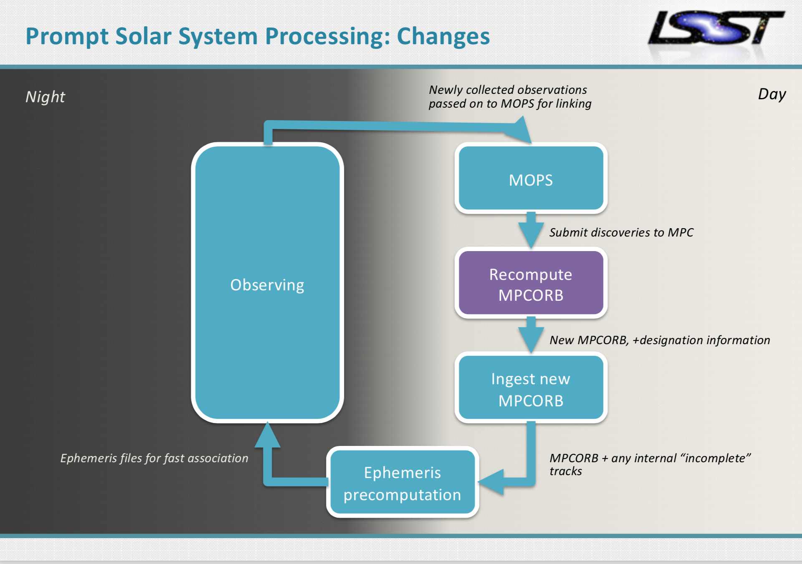

Here you will find a description of on-going software development (and related plans) and also a description of the LSST project produced Moving Object Pipeline System (MOPS).
The Moving Object Pipeline System (MOPS) will be the main software to identify moving Solar System objects in LSST data. MOPS is a deliverable from LSST data management. This effort is being lead by the LSST Solar System Processing Team based at the University of Washington.
Image Credit: Mario Jurić
Proposed MOPS processing cycle - Image Credit: Mario Jurić
What will be in the catalog? Can we still change what’s going to be measured for Solar System Objects?
The Data Products Definition Document (DPDD) defines the outline of what the catalog will contain, but adding more detail via discussions with the SSSC is on-going.
We can make changes as long as they don’t affect budget and schedule, but before the end of 2018 the bulk of the data product format/items should be set.
What will you do with trailed sources & non-linear motion (nearby/geocentric)?
Trailed sources will be detected and characterized, but we will not attempt to fit anything other than heliocentric/barycentric fits.
N.b. trailed sources should be easy to pick out of the alert stream, in real-time.
Will MOPS do forced photometry of Solar System objects?
No.
Can we expect comets, including bright ones, to be treated like any other source in the sky, or if there may be biases against them?
Difference image source detection will find anything that reaches the 5-sigma threshold after convolving with a PSF (point spread function); unless it’s both a very faint (low surface brightness) and very extended comet, it will be detected.
Comet candidates should be easy to detect very early, even before MOPS links an orbit; in the alert stream one can look for adjacent, single-apparition, extended objects that appear in 20-minute visit pairs.
How does MOPS centroid on comet comae and does it avoid astrometry biases due to coma and tail asymmetries?
The centroiding algorithm derives from the SDSS (Sloan Digital Sky Survey) one, that’s been designed to appropriately centroid galaxies that may also exhibit asymmetries.
Is there going to be a MOPS built specific to each population (Inner/Outer/NEO)?
Not unless we have to to meet requirements.
What cadence is needed for MOPS to link tracklets and detect Solar System objects?
To guarantee discovery with 95% confidence, we need three tracklets (each defined as a pair of observations taken in the same night taken no more than 90 minutes apart) taken over 15 days. The high-level MOPS tracklet requirement is OSS-REQ-0159 in LSE-30 .
The maximum size of the search window over which the tracklets need to be linked is defined in LDM-156 as 15 days (and in LDM-156)?
Yes, as we revisit the design in 2018.